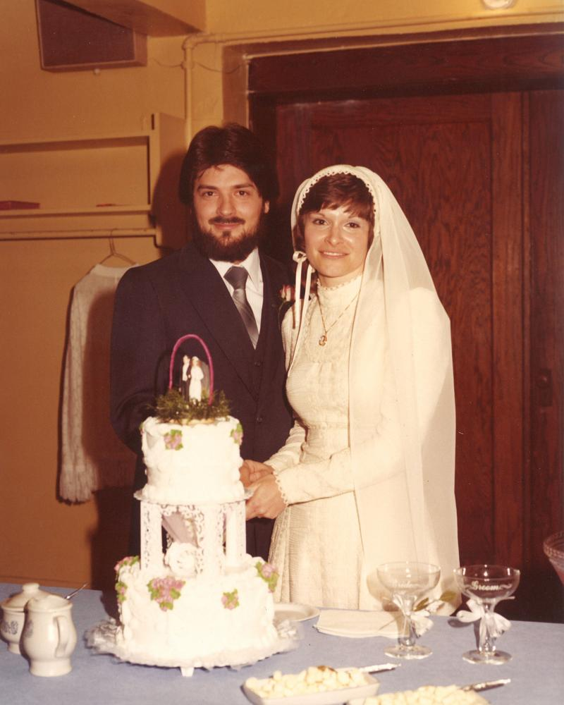
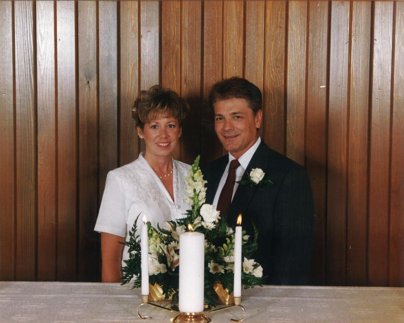

Martin Manley: My Life and Death
Born 8-15-53, Died 8-15-13 , Age 60
- Home Page
- January 1, 2012
- June 11, 2012
- Suicide Preface
- Why Suicide?
- Why not?
- Why Age 60?
- Self-Serving?
- Suicide - How 2
- Gun Control
- Other Suicides
- Other Quotes
- ------------------------------------
- Growing Up
- OMG: I look 60!
- Mom and Dad
- The Heavens
- My Religion
- Chancel Choir
- Victory O Lord
- The Proposal
- Two Marriages
- First Two Loves
- Pictures
- Trips and Travel
- Writing Fiction
- Music & Poetry
- Movies & TV
- Health
- Sleep Deprived
- Living Donor
- Food & Drink
- Creations
- Sports
- KC Star
- KC Tornado
- My IQ
- Synesthesia
- Poker
- Legal
- JOCO, Ks.
- U.S. Financial
- 911 & Conspiracies
- COOL STUFF
- Births & Deaths
Marriages
I have been married twice and there are various references to both wives and both marriages on this site apart from just this page. It’s pretty hard to discuss one’s life without discussing what it was like or what it meant to be married – especially when the total years of marriage were around 21 and half years.
I don’t mean to imply 21.5 years of marriage is a great deal of time – especially since it’s the sum of two marriages. By comparison, my parents were married 56 years when my mom passed away. Still, 20+ years in anyone’s adult life is a long time and it covers a lot. First Chris and then Teri.
Chris: Married 3-28-81, Divorced 11-10-97

I first saw Chris in an evening Economics class at Washburn University in September, 1980. I had just gone back to school and I immediately zeroed in on her. Poor girl. Being relatively brave and having relatively little concern about what anyone else thinks, I followed her home one night after class. Once I knew where she lived, I think I waited a couple days and put a note on her windshield. Chris had a small house without a garage – just a carport.
I wrote my name and phone number on the note and told her that I had seen her in class and that for all I knew she had a boyfriend who would beat the hell of me. I asked only that if she was in a committed relationship (I didn’t see a ring), that she just throw away the note. She could have saved herself by simply having a trash can nearby.
Instead she called me and we hit it off immediately. We were talking marriage within a few months. But, you have to recognize that I was 27 and she was 29 at the time. Both of us were to the point where we were ready to settle down. By early in 1981 we were setting the date at March 28th.
Our honeymoon was one for the ages and there is a separate category to the left specifically called “Honeymoon…s” under "Trips and Travel". Therefore, I won’t go into that here.
When I met Chris, she had a dog named “Cleo” – an Old English Sheepdog. Cleo was a great pet – except that she ate a ton and was huge. But, I came to love her a lot and I spent a lot of time with her. Chris had a veterinarian already, of course, so when it came time to have her nails cut, we took her in to him. When she came back to us, her four paws were bandaged. Whoever cut the nails, cut them too short and they bled. Unfortunately, she would chew on her bandages, so we put one of those cone-shaped things around her neck to keep her from being able to put her mouth to her paws. Even so, within a matter of days, she was limping badly. Obviously, we didn’t know what was wrong, so we took her back to the vet. He kept her a day or two and then called and told us that her bandages had been wrapped too tight and she had lost circulation in one of her paws and that the leg would have to be amputated! We were crushed, of course, but I gave him the go-ahead. The next day he called and said she died.
Apart from breaking up (or more aptly being broken up) with my first two girlfriends when I was in high school and college, that was the worst thing that had ever happened to me. If it were 10 years later and that happened, I would have made the vet’s life a living hell, but at the time, I was still too young and not as ready to go after someone as I would have been later. If it happened today, of course, you could bury someone like that on the internet. But, it’s just as well that it happened when it did. Revenge would have only been time-consuming.
Of course, we got over it as people always do. We got a small black dog named Samantha (Sammy) from the pound and went to a breeder and picked out another Old English Sheepdog puppy (Priscilla). Sammy was a great dog and we had her for a long time. Priscilla was problematic. Old English Sheepdogs are very active and hyper by nature. I, being the idiot I was, picked this dog from the liter because he was the one that wanted to chew on my shoe while the others seemed less interested. I should have chosen the one that was closest to being comatose, but I did just the opposite and we paid for it for years. I suggested getting rid of her many times, but Chris is a woman and… I think we all know what that means.
We had other cats and even another dog later on, but none of them could compare to Cleo, except Sammy.
We didn’t take many vacations even though we had the money. I was just tight. I liked to put it in savings and invest. I was smart enough about numbers to recognize the value as well as the curse of compounded interest. I knew we could be millionaires and retire by the time we were 60 if we just were conservative about spending money. So, we were.
We bought a nice house in 1983 and I actually built two additions to it. But, that wasn’t lost money. I got every cent out of it when I sold it in 1998. We didn’t buy expensive cars although we bought a new car in 1985 and 1988. But, both were inexpensive small cars and we got lots of years out of them.
Overall, we were relatively conservative with money even though we both made a decent living. Consequently, we had a nice nest egg by the time we were ready to... retire... divorce.
Chris and I drifted apart. I take 100% of the blame. She was a very committed person and would do anything for me. It’s not intended to be an excuse, but my mom and dad were essentially both an only-child. They really didn’t understand, nor were they able, to pass on the idea of “family”. Both parents and my two siblings were all relatively individualistic people. We lived out in the sticks, many miles from the nearest town. You either learned how to entertain yourself or you would go crazy. I probably did a little of both as it turns out. But, one thing is for sure… I learned how to exist in my own world.
Unfortunately, that carried over to my marriage. Chris wanted children because 1) she’s normal and 2) she came from a traditional family and extended family. I never did not want children, but I was never ready. I loved my friends' kids, but it was a totally different thing seeing them for an hour or two at a time versus being responsible for them 24/7/365 for life... and OMG... changing their diapers!
Careers just got in the way and so we would take different kids places – even on short trips over the weekend, but we never had kids of our own. I regret to this day that I took 16 years of Chris’ life and she never had children. But, at the same time, I don’t regret that I never had my own children. I would have loved them to death, but I’m not sure what the results of being a father would have been like.
As I stated, I wasn’t raised in a “family” environment like most people. In one sense, the proof is that I was married twice and never had children. My brother has been married for over 20 years and never had children. My sister has been married over a long period of time and never had children. It’s not rare for a couple to be childless, even if it’s by their choice and not a health issue. But, it is rare for all three siblings to be childless by choice. I’m confident that it goes back to our situation where we basically fended for ourself, especially in our teen years and we never really got the "family" thing.
"I have learned that only two things are necessary to keep one's wife happy. First, let her think she's having her own way. And second, let her have it." -- Lyndon B. Johnson
Eventually, Chris and I led two completely different lives and it was only a matter of time before we got a divorce. I remained friends with Chris and have to this day. I tried to help her any way I could after our divorce.
Chris and I separated in May, 1997, but we didn’t get a divorce until November. The divorce was amicable and we used the same attorney. I think she’s forgiven me for whatever it was she needed to forgive me for.
COOL FACTOID: Both wives pursued their Bachelor's degrees and Masters degrees in business at Baker University.
-----------------------------------------------------------------------------
Teri: Married 7-31-99, Divorced 6-3-04

After my divorce with Chris I wasn’t interested in pursuing another relationship for awhile, mostly because I had no way to meet anyone. I didn’t go bar-hopping because I didn’t drink. But, then I discovered Matchmaker on line. It didn’t keep people from lying, but it was still a pretty good service.
I met a few women and had a few dates. But, then I made contact with Teri in early July, 1998. We began dating. She lived in south Johnson County, Kansas – which is the extreme southerly suburbs of Kansas City - about an hour from Topeka where I lived. I immediately fell in love with the area.
I had driven around in JOCO a few times before. It reminded me of Houston in 1973-75 when I lived there. Clean, new, modern, wealthy. I knew the schools were great and there was very little crime. I also knew that I wanted to live there someday.
I pretty much despised Topeka where I lived from ages 1-11 and 25-44. In 1960, Topeka had 120,000 people. Today, Topeka has about 127,000, although if you count the entire county, maybe 200,000. Nevertheless, there are good reasons it has barely grown. On the other hand, Overland Park, Kansas has grown from 21,000 in 1960 to 175,000 today! OP is the biggest city in JOCO, but the entire county is just one big suburb of 560,000. Anyway, that’s where I wanted to be.
We were closing down the last company I had worked with in Topeka and I decided to sell my house and move. I sold the house on the first day it was on the market and before you could say “Goodbye Topeka”, I had moved to Johnson County.
Teri and I dated through 1998 and 1999 and got married on July 31st, 1999.
The great thing about Teri was that she has two daughters – Jaime and Marissa who were eight and six at the time. They are both great kids. Jaime has since graduated Kansas State with a Masters in Accounting. She’s taking her CPA this summer and already has a job beginning in the fall with a firm in KC. Marissa just completed her third year at K-State.
No matter how much I liked the idea of a second chance marriage – especially with kids, I was still largely a fish out of water. I tried to be moldable and God knows, Teri tried to mold me. But, at some point, I think I rebelled against it because I just felt I was losing my identity. In any event, we really weren’t made for each other.
"All marriages are happy. It's the living together afterward that causes all the trouble." -- Raymond Hull
That hasn’t kept us from being friends – actually pretty good friends – in the nine years since we got divorced. We’ve done many dozens, if not hundreds, of things together and I’ve maintained as close a relationship as possible with the girls. I lived only about a mile away from Teri, so it was easy to be there for whatever she needed help with. The one thing I can feel okay about is that there is hardly an inch on that house that I didn’t redo in the years during our marriage or after our divorce.
Teri isn’t a spendaholic by any means, but nobody is cheap like me. At least, no woman. At least, no women in south Johnson County, Kansas! Consequently, that created some problems. I never wanted to go on vacations and spend the money – although we went a few places. But, mostly it was a clash of personalities and priorities. Once we were no longer required to conform, we were very content around each other.
I have no doubt whatsoever that both Teri and Chris are going to be shocked, if not devastated by what I’ve done. I’m sorry, but I did what I think is the best thing to do. Nobody can make that decision for me and I couldn’t be concerned what anyone else’s opinion might have been. Nothing was going to change my mind. I spent 14 months thinking about my suicide plan - probably 100 times a day - and I'm serious. I’ve thought it through like nobody has ever thought anything through. Will it break hearts? Of course, it will. But, you know what? It would have only been a matter of time before hearts were broken anyway. News flash... Someday, I was going to die!
I loved both Chris and Teri to the day of my death and I have great appreciation for the fact that there was a time when I was important enough to them to be a partner in life. It didn’t work out and I take full responsibility in both cases. Nobody is to blame but me.
Copyright 2013 Martin Manley Life and Death. All rights reserved.